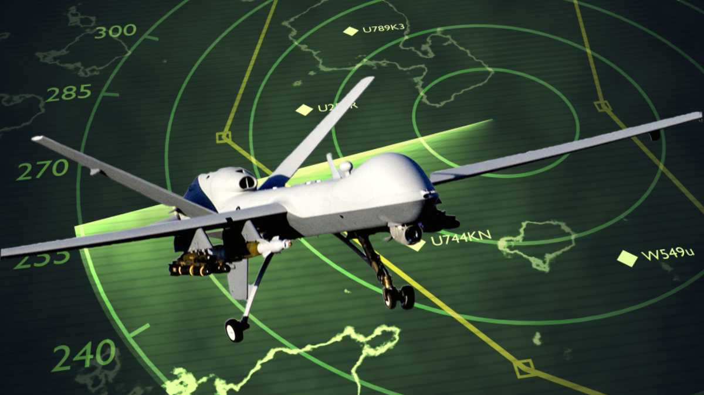
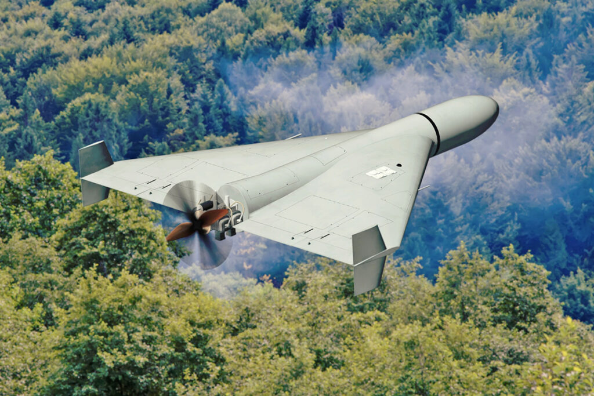
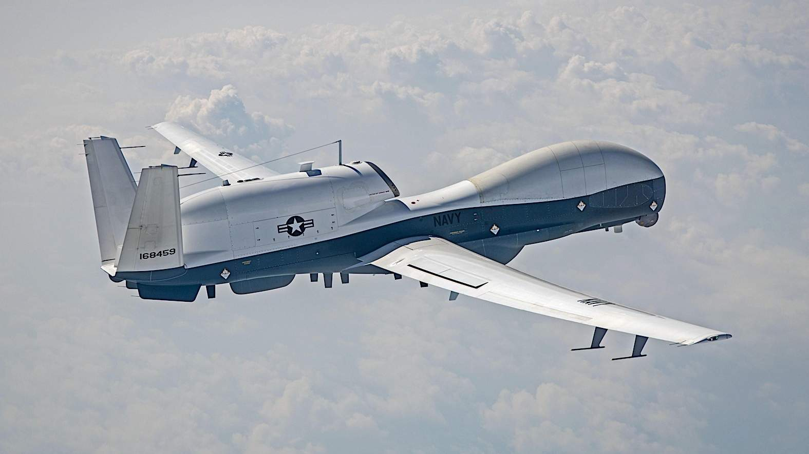

A era da guerra aérea foi silenciosamente transformada. O que antes era domínio exclusivo de pilotos em caças multimilionários deu lugar a um novo protagonista nos céus: o drone. Longe de serem meros brinquedos ou ferramentas de vigilância básica, esses sistemas aéreos não tripulados evoluíram para se tornar a espinha dorsal das operações militares modernas, desempenhando papéis que vão desde o olho invisível sobre o campo de batalha até o braço armado que executa ataques de precisão a centenas de quilômetros de distância.

A função mais estabelecida e fundamental dos drones militares é a coleta de inteligência, vigilância e reconhecimento, conhecida pela sigla ISR (Intelligence, Surveillance, and Reconnaissance). Essas aeronaves são os "olhos e ouvidos" do comandante em campo, projetadas para permanecer no ar por longos períodos, vasculhando vastas áreas ou pairando sobre um ponto de interesse sem serem detectadas.
Esta categoria abrange uma enorme variedade de plataformas. Em uma ponta do espectro, temos drones de grande altitude e longa duração, como o norte-americano RQ-4 Global Hawk. Capaz de voar a mais de 18 mil metros de altitude por mais de 30 horas seguidas, ele pode varrer uma área do tamanho de todo o estado do Maryland (cerca de 100 mil km²) em um único dia, utilizando radares de abertura sintética e sensores eletro-ópticos de alta resolução para enxergar através das nuvens e da escuridão.
Na outra ponta, temos sistemas extremamente pequenos e portáteis, como o RQ-11 Raven, que pode ser lançado manualmente por uma única unidade de infantaria. Com um peso de menos de 2,5 kg e uma autonomia de cerca de 90 minutos, o Raven oferece uma visão "além da próxima colina" para tropas no front, fornecendo imagens em tempo real e eliminando a necessidade de enviar soldados em patrulhas de reconhecimento de alto risco . Entre esses extremos, existem inúmeros sistemas, como os drones comerciais da série DJI Mavic, amplamente utilizados por ambos os lados na guerra da Ucrânia para ajuste de fogo de artilharia e vigilância tática de curto alcance, provando que mesmo tecnologia prontamente disponível no mercado pode ter um valor militar imenso .

Quando se adiciona armamento a um drone de vigilância, ele se transforma em uma plataforma de ataque. Os Drones de Combate, ou UCAVs (Unmanned Combat Aerial Vehicles), são projetados para identificar e engajar alvos com precisão. O exemplo mais icônico é o MQ-9 Reaper, uma evolução do Predator. Descrito como um "caçador-assassino", o Reaper pode carregar uma carga útil significativa de bombas inteligentes e mísseis ar-superfície, como o famoso Hellfire, permitindo que realize missões de "observar e atacar" sem colocar um piloto em risco . O Bayraktar TB2, de fabricação turca, é outro exemplo que ganhou fama global por seu desempenho em conflitos como o de Nagorno-Karabakh e nos primeiros meses da guerra na Ucrânia, onde foi usado para destruir colunas blindadas e sistemas de defesa aérea russos.
Uma categoria distinta e cada vez mais crucial é a das munições perambulantes, popularmente conhecidas como drones "kamikaze". Diferente de um UCAV tradicional que lança um míssil e retorna à base, essas são armas de um só uso: o próprio drone é a munição. Elas pairam sobre uma área de forma autônoma, aguardando a identificação de um alvo de alto valor para então mergulhar e detonar. O russo Lancet e o iraniano Shahed-136 (conhecido pelos russos como Geran-2) são exemplos proeminentes . O Shahed-136, em particular, é uma arma de baixo custo que a Rússia passou a utilizar em enxames para sobrecarregar as defesas aéreas ucranianas e atacar infraestruturas energéticas a centenas de quilômetros da linha de frente, substituindo, na prática, missões de bombardeio estratégico que seriam muito mais caras e arriscadas com aeronaves tripuladas.
Outra vertente que explodiu em uso é a dos drones FPV (First-Person View). Originalmente criados para corridas de drone, esses pequenos veículos são pilotados com óculos de imersão, dando ao operador uma perspectiva em primeira pessoa. Eles são extremamente ágeis, rápidos e baratos, e são frequentemente carregados com ogivas improvisadas para se tornarem munições de precisão de altíssima acuracidade, capazes de voar para dentro de trincheiras, buracos de tanques ou posições fortificadas com uma precisão cirúrgica que nenhum outro sistema consegue igualar.

Enquanto os drones de vigilância observam e os de combate atacam, uma terceira categoria opera em um domínio quase invisível, mas igualmente crítico: o espectro eletromagnético. Os drones de guerra eletrônica (EW) são plataformas especializadas em enganar, interromper ou neutralizar as capacidades do inimigo.
Em vez de câmeras ou mísseis, esses drones carregam equipamentos como receptores de sinais (SIGINT) para localizar e classificar emissões de radar e comunicações inimigas, ou então potentes transmissores capazes de realizar interferência (jamming), cegando os sistemas de comunicação e navegação do oponente . Eles podem, por exemplo, sobrevoar uma área para criar uma "bolha" que neutralize os drones kamikaze adversários ao cortar o sinal entre eles e seus pilotos, ou podem fingir ser um avião amigo para infiltrar sistemas de comunicação e espalhar desinformação (spoofing).
A importância dessa função cresceu tanto que os projetos mais modernos de drones, como os inseridos no programa "Launched Effects" do Exército dos EUA, já nascem com capacidade de guerra eletrônica embutida ou como uma de suas cargas úteis intercambiáveis. Um mesmo drone pode ser configurado para uma missão de reconhecimento com sensores ópticos e, na missão seguinte, ser equipado com um jammer para acompanhar uma coluna blindada e protegê-la de ameaças aéreas inimigas . A corrida entre o desenvolvimento de drones e as contramedidas de guerra eletrônica tornou-se um dos aspectos mais dinâmicos e cruciais dos conflitos contemporâneos.